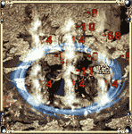

|
很久以前，有一位武艺高强的战士创建了这门剑法，百姓们使用此剑术抵抗怪物。基本剑术学起来容易，招势简单，看起来不华丽。但是，对培养体力和练就扎实的功底有很大帮助，对战士来说入门剑术。根据修炼等级不同，攻击命中率将会得到提高。
- 1等级 : 7级开始修炼
- 2等级 : 9级开始修炼
- 3等级 : 11级开始修炼 |
|
基本剑术
|
 |
攻杀剑术也属于入门剑术，是修炼外力，内功的高级武功。基本剑术到了一定境界，就会运气自然，发出强烈的内功，瞬间爆发出好几倍的力量，能给敌人强烈打击。
- 1等级 : 14级开始修炼
- 2等级 : 16级开始修炼
- 3等级 : 18级开始修炼 |
|
攻杀剑术
|
 |
经过长时间的修炼，剑术和内功都达到一定境界，就可按照自己的意愿使剑发出剑光。使用刺杀剑术就是利用剑光对攻击范围以外的敌人进行强烈攻击。达到最高境界时，甚至可以杀死数丈之外的敌人。
- 1等级 : 19级开始修炼
- 2等级 : 21级开始修炼
- 3等级 : 23级开始修炼 |
|
刺杀剑术
|
 |
与刺杀剑术一样，是可以发出剑光的高级功夫。但是，与刺杀剑术不同，半月弯刀可以同时攻击邻近的多数敌人。剑光的非常有威力，再加上范围也广，所以所消耗掉的内功也相当多，所以如果内功达不到一定境界，是绝对不能使用的。
- 1等级 : 24级开始修炼
- 2等级 : 26级开始修炼
- 3等级 : 28级开始修炼 |
|
半月弯刀
|
|
|
剑术和步法相结合的奇特功夫，力如泰山，向敌人箭一般地跑去。给敌人的打击不算很大，但是用强烈的力气冲撞敌人，可把敌人推入火坑，也可把自己从险境当中救出来。虽然不能像轻攻术一样快速跑动长距离，但是由于具有瞬间快速移动特点，所以在短距离移动或搅乱敌人可以得到很好的效果。一定要注意的是，修炼不足的情况下使用此武功，反而会惹祸上身。
- 1等级 : 27级开始可以修炼
- 2等级 : 29级开始可以修炼
- 3等级 : 31级开始可以修炼 |
|
野蛮冲撞
|
 |
烈火剑法使用内功吸收法术将体内火热的气运聚集到丹田，再注入到武器中攻击敌人，其破坏力非常大。但是，在修炼级别低的时候有可能无法聚集内功，导致功力分散。另外，烈火剑法用的是全身潜伏的内气，所以无法连续使用。
- 1等级 : 32级开始可以修炼
- 2等级 : 34级开始可以修炼
- 3等级 : 36级开始可以修炼 |
|
烈火剑法
|
 |
人飞向空中，从半空落下攻击敌人的剑术，由于盘旋飞上空中的气势就像升天的龙王，所以起名叫做翔空剑法。此剑法威力无比，飞得越高发出来的威力也越大。若没有坚实的内功和体力，是无法使用此剑术，发功之前需要将内气聚到丹田，不能连续过多使用。
- 1等级 : 35级开始可以修炼
- 2等级 : 37级开始可以修炼
- 3等级 : 39级开始可以修炼 |
|
翔空剑法
|
 |
莲月剑法，动作灵活猛烈，是最高剑法之一。一挥剑就会发出强烈剑光，剑光大波大起，根本不给对方还手机会，造成致命的打击。若没有坚实的内功和体力，是无法使用此剑术，发功之前需要将内气聚到丹田，不能连续过多使用。
- 1等级 : 38级开始可以修炼
- 2等级 : 40级开始可以修炼
- 3等级 : 42级开始可以修炼 |
|
莲月剑法
|
 |
 十方斩，以剑身的旋转带出一个环绕的圆型气场，气场边缘的淡蓝色剑气犹如剑刃本身般利不可挡。即使被敌人完全包围，气场造成的伤害仍可以轻易破开入侵者的铠甲。由于使用者从正面挥出武器，因此身处这点的敌人将遭受比其余点更为严重的剑气伤害。
- 1等级 : 40级开始可以修炼
- 2等级 : 43级开始可以修炼
- 3等级 : 46级开始可以修炼 |
|
十方斩
|
 |
 乾坤大挪移其实是一种把身法发挥到极致的技能。使用者以自身极高的速度冲向对方所在的位置，其身法发挥时所带起的空气气流可以硬把对方迫离原来的位置。受到气流牵引影响，对方可能在毫不知情的情况下改变了所处位置。 乾坤大挪移其实是一种把身法发挥到极致的技能。使用者以自身极高的速度冲向对方所在的位置，其身法发挥时所带起的空气气流可以硬把对方迫离原来的位置。受到气流牵引影响，对方可能在毫不知情的情况下改变了所处位置。
- 1等级 : 42级开始可以修炼
- 2等级 : 45级开始可以修炼
- 3等级 : 48级开始可以修炼 |
|
乾坤大挪移
|
 |
 铁布衫是气功横练的一种。通过使贯注在经脉中的内家真气高度集中同时高速流动，让原本的血肉之躯变得坚硬如铁，不惧任何外来的攻击。如果说法师的魔法盾是在人体外围形成了一个防御层，铁布衫则是在人体内以气御袭。由于真气的转换集中，原本攻击依仗的真气也相应被借走，攻击力受损是在所难免的。 铁布衫是气功横练的一种。通过使贯注在经脉中的内家真气高度集中同时高速流动，让原本的血肉之躯变得坚硬如铁，不惧任何外来的攻击。如果说法师的魔法盾是在人体外围形成了一个防御层，铁布衫则是在人体内以气御袭。由于真气的转换集中，原本攻击依仗的真气也相应被借走，攻击力受损是在所难免的。
- 1等级 : 44级开始可以修炼
- 2等级 : 47级开始可以修炼
- 3等级 : 50级开始可以修炼 |
|
铁布衫
|
 |
 斗转星移，能够使用斗转星移的战士本身已是控制气场的高手。当他的身体与周围的空气融成一体时，控制空气就如同控制自己的身体那样简单。使用者只需以强大的漩涡气场吸走对方身体周围的空气，敌人将不受控制地前倾扑跌。旋涡气场的吸取能力越大，敌人扑跌的速度越快。当气场完全发挥时，敌人可能在瞬间已经被吸到使用者的面前。 斗转星移，能够使用斗转星移的战士本身已是控制气场的高手。当他的身体与周围的空气融成一体时，控制空气就如同控制自己的身体那样简单。使用者只需以强大的漩涡气场吸走对方身体周围的空气，敌人将不受控制地前倾扑跌。旋涡气场的吸取能力越大，敌人扑跌的速度越快。当气场完全发挥时，敌人可能在瞬间已经被吸到使用者的面前。
- 1等级 : 46级开始可以修炼
- 2等级 : 49级开始可以修炼
- 3等级 : 52级开始可以修炼 |
|
斗转星移
|
 |
 破血狂杀，从实质来看，是铁布衫完全相反的一种形式。当一个人的意念完全用于破敌时，他将不再顾及自身的生命，所有的护体真气全部流向气海以作进攻之用。当破血狂杀被使出的时候，你将轻易觉察到使用者能够力劈华山的强大伤害力以及已近不堪一击的虚弱身体。 破血狂杀，从实质来看，是铁布衫完全相反的一种形式。当一个人的意念完全用于破敌时，他将不再顾及自身的生命，所有的护体真气全部流向气海以作进攻之用。当破血狂杀被使出的时候，你将轻易觉察到使用者能够力劈华山的强大伤害力以及已近不堪一击的虚弱身体。
- 1等级 : 48级开始可以修炼
- 2等级 : 51级开始可以修炼
- 3等级 : 54级开始可以修炼 |
|
破血狂杀
|